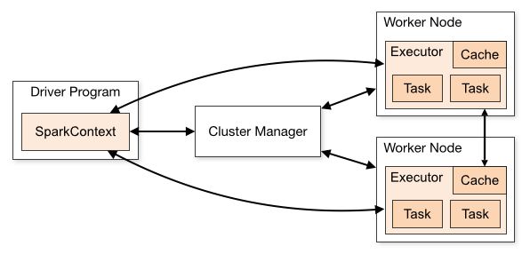

Spark can run on hardware clusters managed by Apache Mesos.
The advantages of deploying Spark with Mesos include:
In a standalone cluster deployment, the cluster manager in the below diagram is a Spark master instance. When using Mesos, the Mesos master replaces the Spark master as the cluster manager.

Now when a driver creates a job and starts issuing tasks for scheduling, Mesos determines what machines handle what tasks. Because it takes into account other frameworks when scheduling these many short-lived tasks, multiple frameworks can coexist on the same cluster without resorting to a static partitioning of resources.
To get started, follow the steps below to install Mesos and deploy Spark jobs via Mesos.
Spark is designed for use with Mesos and does not require any special patches of Mesos.
If you already have a Mesos cluster running, you can skip this Mesos installation step.
Otherwise, installing Mesos for Spark is no different than installing Mesos for use by other frameworks. You can install Mesos either from source or using prebuilt packages.
To install Apache Mesos from source, follow these steps:
Note: If you want to run Mesos without installing it into the default paths on your system
(e.g., if you lack administrative privileges to install it), pass the
--prefix option to configure to tell it where to install. For example, pass
--prefix=/home/me/mesos. By default the prefix is /usr/local.
The Apache Mesos project only publishes source releases, not binary packages. But other third party projects publish binary releases that may be helpful in setting Mesos up.
One of those is Mesosphere. To install Mesos using the binary releases provided by Mesosphere:
The Mesosphere installation documents suggest setting up ZooKeeper to handle Mesos master failover, but Mesos can be run without ZooKeeper using a single master as well.
To verify that the Mesos cluster is ready for Spark, navigate to the Mesos master webui at port
:5050 Confirm that all expected machines are present in the slaves tab.
To use Mesos from Spark, you need a Spark binary package available in a place accessible by Mesos, and a Spark driver program configured to connect to Mesos.
Alternatively, you can also install Spark in the same location in all the Mesos slaves, and configure
spark.mesos.executor.home (defaults to SPARK_HOME) to point to that location.
When Mesos runs a task on a Mesos slave for the first time, that slave must have a Spark binary
package for running the Spark Mesos executor backend.
The Spark package can be hosted at any Hadoop-accessible URI, including HTTP via http://,
Amazon Simple Storage Service via s3n://, or HDFS via hdfs://.
To use a precompiled package:
To host on HDFS, use the Hadoop fs put command: hadoop fs -put spark-.tar.gz
/path/to/spark-.tar.gz
Or if you are using a custom-compiled version of Spark, you will need to create a package using
the make-distribution.sh script included in a Spark source tarball/checkout.
make-distribution.sh --tgz.The Master URLs for Mesos are in the form mesos://host:5050 for a single-master Mesos
cluster, or mesos://zk://host:2181 for a multi-master Mesos cluster using ZooKeeper.
In client mode, a Spark Mesos framework is launched directly on the client machine and waits for the driver output.
The driver needs some configuration in spark-env.sh to interact properly with Mesos:
spark-env.sh set some environment variables:
export MESOS_NATIVE_JAVA_LIBRARY=<path to libmesos.so>. This path is typically
<prefix>/lib/libmesos.so where the prefix is /usr/local by default. See Mesos installation
instructions above. On Mac OS X, the library is called libmesos.dylib instead of
libmesos.so.export SPARK_EXECUTOR_URI=<URL of spark-.tar.gz uploaded above>.spark.executor.uri to <URL of spark-.tar.gz>.Now when starting a Spark application against the cluster, pass a mesos://
URL as the master when creating a SparkContext. For example:
val conf = new SparkConf()
.setMaster("mesos://HOST:5050")
.setAppName("My app")
.set("spark.executor.uri", "<path to spark-.tar.gz uploaded above>")
val sc = new SparkContext(conf)(You can also use spark-submit and configure spark.executor.uri
in the conf/spark-defaults.conf file.)
When running a shell, the spark.executor.uri parameter is inherited from SPARK_EXECUTOR_URI, so
it does not need to be redundantly passed in as a system property.
./bin/spark-shell --master mesos://host:5050Spark on Mesos also supports cluster mode, where the driver is launched in the cluster and the client can find the results of the driver from the Mesos Web UI.
To use cluster mode, you must start the MesosClusterDispatcher in your cluster via the sbin/start-mesos-dispatcher.sh script,
passing in the Mesos master url (e.g: mesos://host:5050).
From the client, you can submit a job to Mesos cluster by running spark-submit and specifying the master url
to the url of the MesosClusterDispatcher (e.g: mesos://dispatcher:7077). You can view driver statuses on the
Spark cluster Web UI.
Spark can run over Mesos in two modes: “fine-grained” (default) and “coarse-grained”.
In “fine-grained” mode (default), each Spark task runs as a separate Mesos task. This allows multiple instances of Spark (and other frameworks) to share machines at a very fine granularity, where each application gets more or fewer machines as it ramps up and down, but it comes with an additional overhead in launching each task. This mode may be inappropriate for low-latency requirements like interactive queries or serving web requests.
The “coarse-grained” mode will instead launch only one long-running Spark task on each Mesos machine, and dynamically schedule its own “mini-tasks” within it. The benefit is much lower startup overhead, but at the cost of reserving the Mesos resources for the complete duration of the application.
To run in coarse-grained mode, set the spark.mesos.coarse property in your
SparkConf:
conf.set("spark.mesos.coarse", "true")In addition, for coarse-grained mode, you can control the maximum number of resources Spark will
acquire. By default, it will acquire all cores in the cluster (that get offered by Mesos), which
only makes sense if you run just one application at a time. You can cap the maximum number of cores
using conf.set("spark.cores.max", "10") (for example).
Spark can make use of a Mesos Docker containerizer by setting the property spark.mesos.executor.docker.image
in your SparkConf.
The Docker image used must have an appropriate version of Spark already part of the image, or you can have Mesos download Spark via the usual methods.
Requires Mesos version 0.20.1 or later.
You can run Spark and Mesos alongside your existing Hadoop cluster by just launching them as a
separate service on the machines. To access Hadoop data from Spark, a full hdfs:// URL is required
(typically hdfs://<namenode>:9000/path, but you can find the right URL on your Hadoop Namenode web
UI).
In addition, it is possible to also run Hadoop MapReduce on Mesos for better resource isolation and sharing between the two. In this case, Mesos will act as a unified scheduler that assigns cores to either Hadoop or Spark, as opposed to having them share resources via the Linux scheduler on each node. Please refer to Hadoop on Mesos.
In either case, HDFS runs separately from Hadoop MapReduce, without being scheduled through Mesos.
See the configuration page for information on Spark configurations. The following configs are specific for Spark on Mesos.
| Property Name | Default | Meaning |
|---|---|---|
spark.mesos.coarse |
false | If set to "true", runs over Mesos clusters in "coarse-grained" sharing mode, where Spark acquires one long-lived Mesos task on each machine instead of one Mesos task per Spark task. This gives lower-latency scheduling for short queries, but leaves resources in use for the whole duration of the Spark job. |
spark.mesos.extra.cores |
0 | Set the extra amount of cpus to request per task. This setting is only used for Mesos coarse grain mode. The total amount of cores requested per task is the number of cores in the offer plus the extra cores configured. Note that total amount of cores the executor will request in total will not exceed the spark.cores.max setting. |
spark.mesos.mesosExecutor.cores |
1.0 | (Fine-grained mode only) Number of cores to give each Mesos executor. This does not include the cores used to run the Spark tasks. In other words, even if no Spark task is being run, each Mesos executor will occupy the number of cores configured here. The value can be a floating point number. |
spark.mesos.executor.docker.image |
(none) |
Set the name of the docker image that the Spark executors will run in. The selected
image must have Spark installed, as well as a compatible version of the Mesos library.
The installed path of Spark in the image can be specified with spark.mesos.executor.home;
the installed path of the Mesos library can be specified with spark.executorEnv.MESOS_NATIVE_LIBRARY.
|
spark.mesos.executor.docker.volumes |
(none) |
Set the list of volumes which will be mounted into the Docker image, which was set using
spark.mesos.executor.docker.image. The format of this property is a comma-separated list of
mappings following the form passed to docker run -v. That is they take the form:
[host_path:]container_path[:ro|:rw] |
spark.mesos.executor.docker.portmaps |
(none) |
Set the list of incoming ports exposed by the Docker image, which was set using
spark.mesos.executor.docker.image. The format of this property is a comma-separated list of
mappings which take the form:
host_port:container_port[:tcp|:udp] |
spark.mesos.executor.home |
driver side SPARK_HOME |
Set the directory in which Spark is installed on the executors in Mesos. By default, the
executors will simply use the driver's Spark home directory, which may not be visible to
them. Note that this is only relevant if a Spark binary package is not specified through
spark.executor.uri.
|
spark.mesos.executor.memoryOverhead |
executor memory * 0.10, with minimum of 384 | The amount of additional memory, specified in MB, to be allocated per executor. By default, the overhead will be larger of either 384 or 10% of `spark.executor.memory`. If it's set, the final overhead will be this value. |
A few places to look during debugging:
:5050
/var/log/mesos by defaultAnd common pitfalls:
http://, hdfs:// or s3n:// URL you gave